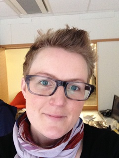

Therese Augustsson
Jag har sökt mig till utbildningen Webbprogrammerare därför att jag vill lära mig. Jag jobbar med försäljning av TA-system på företaget Unifaun i GBG. Sitter ofta i samtal med utvecklare, med användare och med alla möjliga olika intressenter. Jag vill helt enkelt veta vad jag pratar om.
Mitt tidigare liv som Kalmarit
För några år sedan, närmare bestämt 13, flyttade jag till Kalmar, bar in mitt pick och pack på studentboendet Gladan där jag bodde några år. Jag började på Musikindustriprogrammet, men fann snart att jag ville något annat så jag började plocka lite olika kurser inom:
- Nationalekonomi
- Företagsekonomi bl.a:
- Ekonomistyrning
- del av grundkurserna
- Redovisning
- inte min starkaste sida, den enda tentan jag körde på och det gjorde jag 2 ggr.
- Marknadsföring
- jodå, visst läste jag Kotler...
- Företagsetik
Mitt tidigare liv som tysk
Efter Kalmar tog jag mig till Bremen som utbytesstudent där jag stannade ett halvår. Studierna var mycket intressanta och fritiden var väldigt lugn, men jag fick ändå in en rutin jag följde varje dag. En dag kunde se ut ungefär såhär:
- vaknade
- gick en lång promenad
- tog spårvagnen till universitetet
- gick på föreläsningar, åt lunch o.s.v.
- mötte upp mina vänner på stan för en fika
- tränade eller gick på krogen om det var helg
- tog spårvagnen hem igen
Mitt arbetsliv
Vid sidan av mina studier i Kalmar jobbade jag som en stolle. Tidigare erfarenhet av restaurangjobb gjorde att jag sökte mig till den branschen igen. Jag jobbade bl.a. på:
- Molly Malones Irish Pub
- Calmar Hamnkrog
- Kåren
- Halltorps Gästgiveri
Och efter mina studier har jag jobbat på 3 arbetsplatser:
Och det är på Unifaun jag jobbar nu också vilket jag gjort i 6 år.
Sammanfattningsvis är jag en av dem som förmodas få vissa problem att genomföra utbildningen på helfart. Jag väljer att i första läget ignorera att det förmodligen stämmer och kör på som om jag hade all tid i världen. Detta trots att jag jobbar 100% och har två små grabbar på 1 och 3 år.
Jag byter ut Netflix och träning mot Johan Leitet och Mats Loock så får vi se hur länge det går.